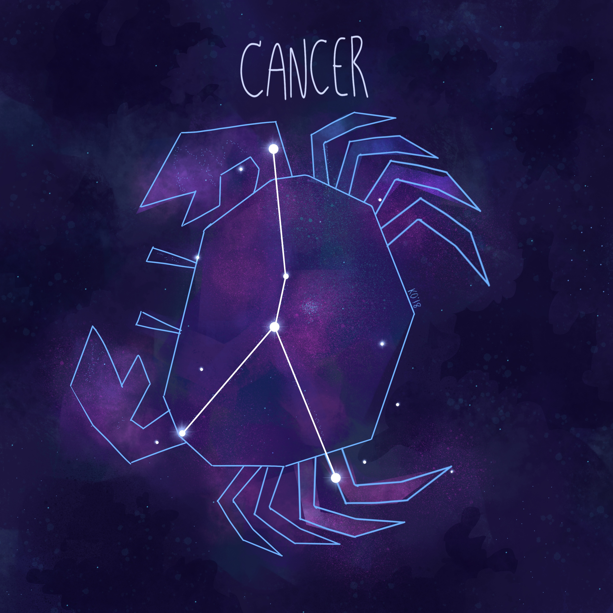

Cancer (Constellation)
► Cancer, the crab, is the dimmest of the 12 zodiac constellations, yet it contains one of the brightest star clusters, the Beehive Cluster, as well as stars with orbiting planets. Cancer is the dimmest of the zodiacal constellations, having only two stars above the fourth magnitude. ◄
► In both hemispheres, Cancer is most visible in March, April and May. Because the constellation is so dim, it shows up best in dark areas or during a new moon. Although Cancer disappears from the Northern Hemisphere in July and August, it's visible at least part of the year from anywhere in the world except Antarctica. ◄
